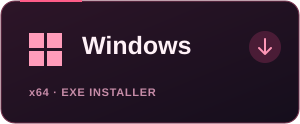
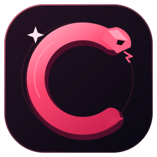
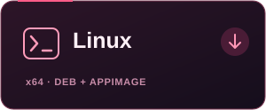
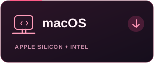
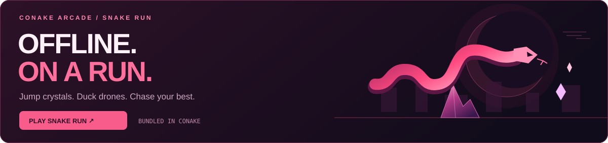

Windows

Windows desktop · x64
Download .exe
conakeBROWSER / CONAKE STUDIOANIME ECLIPSE / v0.1.15
Your tabs. Your rules. Drag, pin, name, and color your tabs—then add anime themes, community extensions, and an offline arcade that refuses to quit.
WINDOWSLINUXmacOS
01 / GET THE BROWSER
Real desktop installers. Download, open, and start your next arc. No source checkout or Node.js needed.

Windows desktop · x64
Download .exe
Linux desktop · x86_64
Ubuntu / Mint / Debian .deb ↓ Other Linux desktops AppImage ↓
Choose your Mac's processor.
Apple Silicon .dmg ↓ Intel Mac .dmg ↓Use an installer above. GitHub's “Source code” and “Download ZIP” links contain the download website files.
02 / BUILD YOUR UNIVERSE
Drag to reorder. Pin your essentials. Give tabs a name and any accent color in Tab Studio beside the + button. Choose compact, comfortable, or roomy tabs.
Explore community extensions or publish your own JavaScript and CSS content scripts. Review the source and site access before installing.
Open Extension Store ↗Create a password-encrypted local profile for bookmarks, history, settings, API keys, and your Snake Run best. Accounts stay on your computer.
How accounts work ↓03 / CONAKE ARCADE

Jump crystals. Duck drones. Collect glowing orbs. Snake Run is bundled into Conake v0.1.15 and works offline without an extra game download.
Space jump · ↓ duck · P pause · Touch controls included
The web version caches after your first online visit. Web scores stay on that device; app scores stay in your encrypted local profile.
04 / FIND YOUR PEOPLE
05 / QUICK ANSWERS
Open your installer, then create a local account with a password of at least 12 characters. On later launches, sign in to unlock your saved profile.
Open Extensions in Conake to review an extension’s source and website access before installing it. Enable extension mode, then lock and sign in again. The first format supports JavaScript and CSS content scripts for HTTP/HTTPS websites; it does not install arbitrary Chrome Web Store packages. Creators are not automatically reviewed.
Right-click, or use a two-finger click on your trackpad, to open the context menu. Text fields offer Cut, Copy, Paste, Paste as Plain Text, Undo, Redo and Select All where available. You can also click Edit ▾ beside Lock. It uses the page or browser field you last focused.
Keyboard shortcuts work too: Ctrl+C copies, Ctrl+X cuts, Ctrl+V pastes and Ctrl+A selects all. Use Command on Mac.
Bookmarks, history, settings, the download list, and API keys are saved in a password-encrypted profile. Accounts stay on this computer. There is no cloud sync or password recovery, so keep your password safe.
Click Lock to sign out and close your tabs. Website sessions end on sign-out or restart. Up to 40 pinned addresses, names, colors, and their order are saved in your encrypted profile and reopen after sign-in. Other tabs and the recent closed-tab list reset when you lock. Extension mode temporarily stores session data on disk and clears it during normal lock or exit; a crash can leave temporary files. Files you download, backups, and files left by older versions remain outside the encrypted profile.
Use the .deb package on Linux Mint, Ubuntu, or Debian; use AppImage on other Linux desktops. Use .exe on Windows and the matching .dmg on your Mac. GitHub's Source code and Download ZIP links contain the download page files. Use one of the installer buttons above.